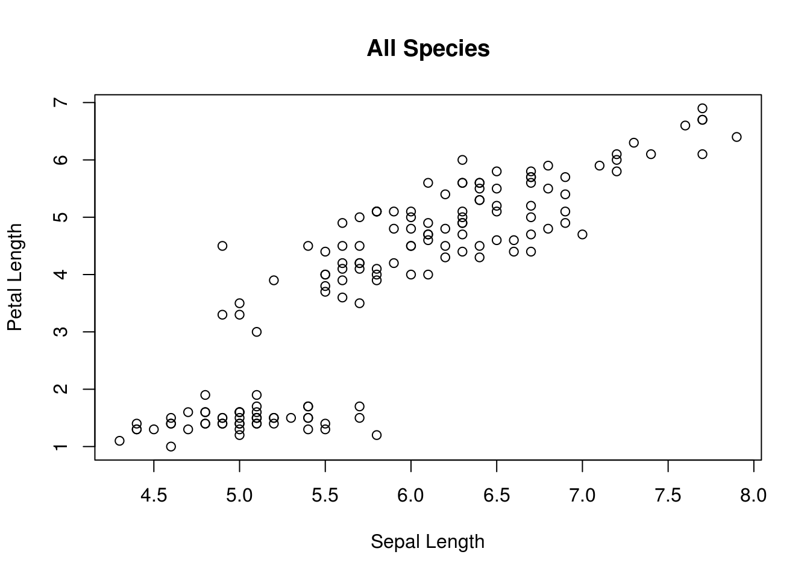
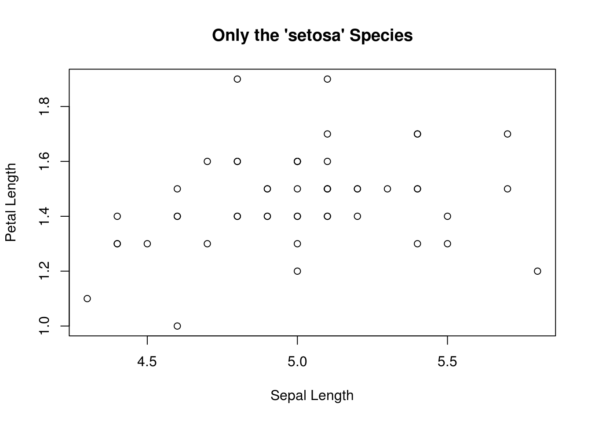

Chapter 2 Quickstart
Plumber allows you to create APIs by merely decorating your existing R code with special annotations. The example below shows a file named plumber.R (the conventional name for Plumber APIs) which defines an API.
# plumber.R
#' Echo the parameter that was sent in
#' @param msg The message to echo back.
#' @get /echo
function(msg=""){
list(msg = paste0("The message is: '", msg, "'"))
}
#' Plot out data from the iris dataset
#' @param spec If provided, filter the data to only this species (e.g. 'setosa')
#' @get /plot
#' @png
function(spec){
myData <- iris
title <- "All Species"
# Filter if the species was specified
if (!missing(spec)){
title <- paste0("Only the '", spec, "' Species")
myData <- subset(iris, Species == spec)
}
plot(myData$Sepal.Length, myData$Petal.Length,
main=title, xlab="Sepal Length", ylab="Petal Length")
}This file defines two Plumber “endpoints.” One is hosted at the path /echo and simply echoes the message passed in; the other is hosted at the path /plot and returns an image showing a simple R plot.
If you haven’t installed plumber yet, see the installation section. Once you have plumber installed, you can use the plumber::plumb function to translate this R file into a Plumber API:
pr <- plumber::plumb("plumber.R")The pr object now encapsulates all the logic represented in your plumber.R file. The next step is to bring the API to life using the run method:
pr$run()You should see a message about your API running on your computer on port 8000. The API will continue running in your R session until you press the Esc key. If you’re running this code locally on your personal machine, you should be able to open http://localhost:8000/echo or http://localhost:8000/plot in a web browser to test your new API endpoints.
If you’re using a tool like RStudio Server to run your R code on a remote machine, you should see the networking section for help with visiting your API.
The /echo endpoint should show output resembling the following.
{
"msg": ["The message is: ''"]
}The /plot endpoint will show you a simple plot of some data from the iris dataset.

If you see something like the above: congratulations! You’ve just created your first Plumber API! You’ve already exercised your API from a web browser, but there’s nothing stopping you from leveraging this API from third-party tools or a client developed in R or any other programming language.
2.1 Specifying the Inputs
You may have noticed that the functions that define our endpoints accept parameters. These parameters allow us to customize the behavior of our endpoints. One of the ways to do this is using “query strings” which are a way of passing variables into an HTTP API. If you visit http://localhost:8000/plot?spec=setosa, you should see a similar graph to the one you saw before, but now the dataset has been filtered to only include the “setosa” species in the iris dataset.

As you might have guessed, the spec=setosa portion of the URL sets the spec parameter to setosa. More details on how Plumber processes inputs are available in the Routing & Input Chapter.
2.2 Customizing The Output
In the previous example, you saw one endpoint that rendered into JSON and one that produced an image. Unless instructed otherwise, Plumber will attempt to render whatever your endpoint function returns as JSON. However, you can specify alternative “serializers” which instruct Plumber to render the output as some other format such as HTML (@html), PNG (@png), or JPEG (@jpeg).
#' @get /hello
#' @html
function(){
"<html><h1>hello world</h1></html>"
}This endpoint would produce something like the following, when visited. It also sets the appropriate Content-Type header so that a browser that visits this page would know to render the result as HTML.
<html><h1>hello world</h1></html>You can even provide your own custom serializers and define how to translate the R object produced by your endpoint into the bits that will be produce Plumber’s HTTP response.
You can find more details in the Rendering & Output chapter.